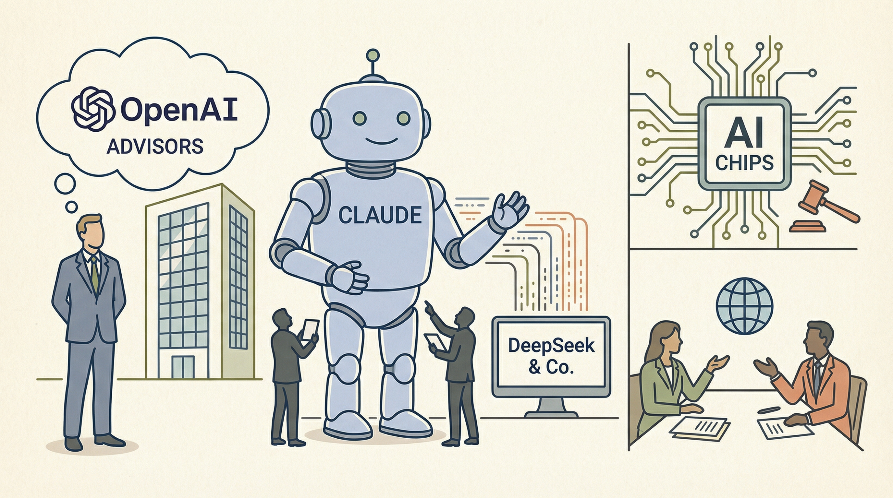

Anthropic与五角大楼就AI使用展开社交媒体辩论，未来取决于‘任何合法用途’。
两克伴AIGC日报
2026-02-24 星期二

本期关注：在Anthropic与五角大楼的生存谈判内部、Anthropic员工股份出售预计将达到60亿美元、Galaxy S26将配备“Hey Plex”困惑热词，与“Hey Google”和Bixby并存 - 9to5Google、清华刘洋团队论文：揭示为何 70B 的医疗模型，反而不如 8B 会问诊丨ILCR 2026
📰 行业动态
Anthropic启动股票出售计划，员工股份预计总值达60亿美元。
三星Galaxy S26将支持新热词‘Hey Plex’，加入‘Hey Google’和Bixby。
🔥 今日焦点
清华大学刘洋团队在ILCR 2026会议上发表的论文《DOCTOR-R1: Mastering Clinical Inquiry with Experiential Agentic Reinforcement Learning》揭示了医疗AI领域的一个关键问题：尽管70B参数规模的模型在静态评测中表现出色，但在实际问诊场景中却不如8B参数规模的模型有效。这一研究指出，传统的医疗AI评估方式主要关注模型的知识获取与推理能力，而忽略了真实医疗实践中信息不完整、决策动态性的特点。
该研究强调，真实医疗问诊是一个连续提问、风险识别与信息整合的动态过程，而非简单的知识问答。现有模型在静态评测中展现的知识优势并未转化为实际问诊场景中的可靠支持，暴露出提问策略僵化、缺乏沟通与共情能力等问题。
DeepMind近期的研究指出，在多智能体系统中，随着智能体数量的增加，系统可能会出现混乱，甚至达到一个“Agent天花板”，即智能体数量达到一定规模后，系统性能不再提升。这一发现对于AI领域具有重要意义。首先，它揭示了多智能体系统中的复杂性和潜在风险，为AI开发者提供了新的思考方向。其次，这一研究有助于优化多智能体系统的设计，提高系统性能和稳定性。最后，它对AI领域的未来研究方向产生了深远影响，促使研究者们重新审视多智能体系统中的关键问题。总之，DeepMind的这一发现为AI领域带来了新的挑战和机遇，值得我们深入探讨和研究。
---
近年来，随着人工智能技术的飞速发展，企业智能体（AI Agent）在各个行业中的应用日益广泛。然而，经过一年的喧嚣与试错，脑极体在最新文章《企业智能体“三宗罪”》中提出，企业智能体在实际应用中存在三大问题。首先，过度依赖技术导致忽视用户体验，使得智能体功能强大却难以满足用户需求。其次，数据隐私和安全问题日益凸显，智能体在处理企业数据时可能存在泄露风险。最后，智能体的决策逻辑缺乏透明度，难以保证决策的公正性和合理性。这些问题不仅影响企业智能体的应用效果，也对整个AI领域的发展提出了严峻挑战。因此，重新审视企业智能体的“三宗罪”对于推动AI技术的健康发展具有重要意义。
📄 重点论文
**核心贡献**: 提出了一种名为Chart Insight Agent Flow的多智能体框架，用于图表摘要，通过规划和执行过程捕捉数据可视化中的深层洞察。
**与AI Agent的关联**: 该研究通过多智能体系统增强了数据可视化的理解，对AI Agent在信息处理和数据分析中的应用具有重要价值。
**核心贡献**: 提出了Agentic Problem Frames（APF），一个系统性的工程框架，强调结构化交互而非内部模型智能，以确保工业级可靠性。
**与AI Agent的关联**: APF框架为大型语言模型作为自主代理的开发提供了工程蓝图，对Agent研究和应用有重要指导意义。
**核心贡献**: OptiRepair将供应链优化模型的诊断和修复任务分解为可行性评估阶段，并使用LLM代理进行自动化处理。
**与AI Agent的关联**: 该研究展示了AI代理在供应链管理中的应用潜力，对Agent在复杂系统优化中的应用有实际价值。
🛠️ 产品推荐
Agentic Browser Automation是一款轻量级的浏览器自动化工具，它通过Selenium和Claude Code Bridge实现高效代码生成。该产品旨在帮助开发者简化自动化测试流程，提高工作效率。通过AI技术，Agentic Browser Automation能够自动识别网页元素，生成相应的测试代码，有效解决传统自动化测试中代码编写繁琐、效率低的问题。对于技术从业者而言，Agentic Browser Automation将大大提升自动化测试的便捷性和准确性。
---
Show HN：一款名为Rhelm的AI工具，旨在优化任务分配。该工具针对80%的常规任务，避免过度依赖大型AI模型如GPT-4，降低成本并提高效率。Rhelm是一款可视化Web应用，可帮助用户组织AI工作流程，实现智能任务路由，为IT从业者提供高效、经济的解决方案。
---
Dypai是一款基于AI和MCP（模型控制协议）的云端后端平台。用户可通过描述需求，让AI助手自动构建整个后端，无需编写API或边缘函数。后端由数据库查询、支付、邮件、Slack、WhatsApp、AI代理等节点组成，形成流程并暴露为生产API端点。Dypai简化了后端开发流程，提高开发效率，降低技术门槛，适用于技术从业者。